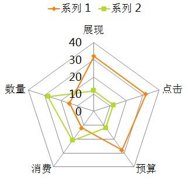
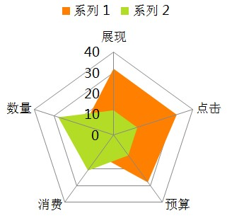

- 简介
- 名词解析
- 图表类型
- 初始化
- 方法
- 选项
- option
- legend
- dataRange
- toolbox
- tooltip
- dataZoom
- grid
- xAxis
- yAxis
- axis
- series
- itemStyle
- lineStyle
- areaStyle
- textStyle
- loadingOption
- color
- calculable
- calculableColor
- calculableHolderColor
- nameConnector
- valueConnector
- animation
- animationDuration
- animationEasing
- 多级控制设计
- 附录：一个直观的事例
简介
ECharts，纯Javascript图表库，基于Canvas，底层依赖ZRender，商业产品常用图表库，提供直观，生动，可交互，可个性化定制的数据统计图表。创新的拖拽重计算、数据视图等特性大大增强了用户体验，赋予了用户对数据进行挖掘、整合的能力。图表类型支持折线图（区域图）、柱状图（条状图）、饼图（环形图），同时支持任意维度的堆积和多图表混合展现。

名词解析
基本名词
| 名词 | 描述 |
|---|---|
| chart | 是指一个完整的图表，如折线图，饼图等“基本”图表类型或由基本图表组合而成的“混搭”图表，可能包括坐标轴、图例等 |
| axis | 直角坐标系中的一个坐标轴，坐标轴可分为类目轴和数值轴 |
| xAxis | 直角坐标系中的横轴，通常并默认为类目轴 |
| yAxis | 直角坐标系中的纵轴，通常并默认为数值轴 |
| grid | 直角坐标系中除坐标轴外的绘图网格 |
| legend | 图例 |
| dataRange | 值域选择，常用于展现地域数据时选择值域范围 |
| toolbox | 辅助工具箱 |
| tooltip | 气泡提示框，用于展现更详细的数据 |
| dataZoom | 数据区域缩放，常用于展现大数据时选择可视范围 |
| series | 数据系列 |
图表名词
| 名词 | 描述 |
|---|---|
| line | 折线图，堆积折线图，区域图，堆积区域图 |
| bar | 柱形图（纵向），堆积柱形图，条形图（横向），堆积条形图 |
| scatter | 散点图，气泡图 |
| k | K线图 |
| pie | 饼图，圆环图 |
| radar | 雷达图，填充雷达图（暂不支持） |
| map | 地图（暂时仅支持中国地图） |
图表类型
图表库标准包含单图表类型的标准图表以及多图表类型混合的混搭图表：

单图表类型：line
| 折线图 | 堆积折线图 | 区域图 | 堆积区域图 |
|---|---|---|---|
 |
 |
 |
 |
单图表类型：bar
| 柱形图 | 堆积柱形图 | 条形图 | 堆积条形图 |
|---|---|---|---|
 |
 |
 |
 |
单图表类型：scatter
| 散点图 | 气泡图 |
|---|---|
 |
 |
单图表类型：k
| K线图 |
|---|
 |
单图表类型：pie
| 饼图 | 圆环图 |
|---|---|
 |
 |
单图表类型：radar（暂不支持）
| 雷达图 | 填充雷达图 |
|---|---|
|  |  |
单图表类型：map
| 中国地图 |
|---|
 |
初始化
图表库实现为多实例的，实例选项在新建时传入，同时也可在实例新建后通过实例方法setOption（见方法）传入，两种初始化方式最终产出效果是等价的，即如下两组代码产出效果相同。
//初始化实例时传入选项 var myChart = new echarts(option); //初始化实例选项为空，通过实例方法传入选项 var myChart = new echarts(); myChart.setOption(option);
同时，在实例中任何个性化选项不会影响其他已存在或未来生成的实例。
方法
| 名称 | 参数 | 描述 |
|---|---|---|
| {void} setOption | {Object} option, {boolean=} notMerge |
万能接口，配置图表实例任何可配置选项（详见option），多次调用时option选项是默认是合并（merge）的， 如果不需求，可以通过notMerger参数为true阻止与上次option的合并。 |
| {void} setSeries | {Array} series, {boolean=} notMerge |
数据接口，驱动图表生成的数据内容（详见series），效果等同调用setOption({series:{...}}) |
| {void} on | {string} eventName, {Function} eventListener |
事件绑定，支持事件有： REFRESH，RESTORE，CLICK，HOVER， DATA_CHANGED，MAGIC_TYPE_CHANGED，DATA_VIEW_CHANGED， DATA_ZOOM，DATA_RANGE，LEGEND_SELECTED，MAP_SELECTED |
| {void} un | {string} eventName, {Function} eventListener |
事件解绑定 |
| {void} showLoading | {Object} loadingOption | 过渡控制（详见loadingOption），显示loading（读取中） |
| {void} hideLoading | {void} | 过渡控制，隐藏loading（读取中） |
| {ZRender} getZrender | {void} | 获取当前图表所用ZRender实例，可用于添加额外图形或进行深度定制，zrender接口详见ZRender |
| {void} resize | {void} | ECharts没有绑定resize事件，显示区域大小发生改变内部并不知道， 使用方可以根据自己的需求绑定关心的事件，主动调用resize达到区域更新的效果。 |
| {void} refresh | {void} | 刷新图表，图例选择、数据区域缩放，拖拽状态均保持。 |
| {void} restore | {void} | 还原图表，各种状态均被清除，还原为最初展现时的状态。 |
| {void} clear | {void} | 清空绘画内容，清空后实例可用 |
| {void} dispose( {void} ) | {void} | 释放图表实例，释放后实例不再可用 |
选项
option
图表选项，包含图表实例任何可配置选项
| 名称 | 描述 |
|---|---|
| {Array} color | 数值系列的颜色列表，默认为null则采用内置颜色，可配数组，eg：['#87cefa', 'rgba(123,123,123,0.5)','...']，当系列数量个数比颜色列表长度大时将循环选取 |
| {Object} legend | 图例（详见legend），每个图表最多仅有一个图例，混搭图表共享 |
| {Object} dataRange | 值域选择（详见dataRange）,值域范围 |
| {Object} toolbox | 工具箱（详见toolbox），每个图表最多仅有一个工具箱 |
| {Object} tooltip | 提示框（详见tooltip），鼠标悬浮交互时的信息提示 |
| {Object} dataZoom | 数据区域缩放（详见dataZoom）,数据展现范围选择 |
| {Object} grid | 直角坐标系内绘图网格（详见grid） |
| {Array | Object} xAxis | 直角坐标系中横轴数组（详见xAxis），数组中每一项代表一条横轴坐标轴，标准（1.0）中规定最多同时存在2条横轴 |
| {Array | Object} yAxis | 直角坐标系中纵轴数组（详见yAxis），数组中每一项代表一条纵轴坐标轴，标准（1.0）中规定最多同时存在2条纵轴 |
| {Array} series | 驱动图表生成的数据内容（详见series），数组中每一项代表一个系列的特殊选项及数据 |
legend
图例，每个图表最多仅有一个图例。try this »
| 名称 | 默认值 | 描述 |
|---|---|---|
| {string} orient | 'horizontal' | 布局方式，默认为水平布局，可选为：'horizontal' | 'vertical' |
| {string | number} x | 'center' | 水平安放位置，默认为全图居中，可选为：'center' | 'left' | 'right' | {number}（x坐标，单位px） |
| {string | number} y | 'top' | 垂直安放位置，默认为全图顶端，可选为：'top' | 'bottom' | 'center' | {number}（y坐标，单位px） |
| {color} backgroundColor | 'rgba(0,0,0,0)' | 图例背景颜色，默认透明 |
| {string} borderColor | '#ccc' | 图例边框颜色 |
| {number} borderWidth | 0 | 图例边框线宽，单位px，默认为0（无边框） |
| {number | Array} padding | 5 | 图例内边距，单位px，默认各方向内边距为5，接受数组分别设定上右下左边距，同css，见下图 |
| {number} itemGap | 10 | 各个item之间的间隔，单位px，默认为10，横向布局时为水平间隔，纵向布局时为纵向间隔，见下图 |
| {Object} textStyle | {color: '#333'} | 默认只设定了图例文字颜色（详见textStyle） |
| {Array <string>} data | [ ] | 图例内容数组，数组项为{string}，每一项代表一个系列的name。 使用根据该值索引series中同名系列所用的图表类型和itemStyle，如果索引不到，该item将不显示。 |

dataRange
值域选择，每个图表最多仅有一个值域控件。try this »
| 名称 | 默认值 | 描述 |
|---|---|---|
| {string} orient | 'vertical' | 布局方式，默认为垂直布局，可选为：'horizontal' | 'vertical' |
| {string | number} x | 'left' | 水平安放位置，默认为全图左对齐，可选为：'center' | 'left' | 'right' | {number}（x坐标，单位px） |
| {string | number} y | 'bottom' | 垂直安放位置，默认为全图底部，可选为：'top' | 'bottom' | 'center' | {number}（y坐标，单位px） |
| {color} backgroundColor | 'rgba(0,0,0,0)' | 值域控件背景颜色，默认透明 |
| {string} borderColor | '#ccc' | 值域控件边框颜色 |
| {number} borderWidth | 0 | 值域控件边框线宽，单位px，默认为0（无边框） |
| {number | Array} padding | 5 | 值域控件内边距，单位px，默认各方向内边距为5，接受数组分别设定上右下左边距，同css，见下图 |
| {number} itemGap | 10 | 各个item之间的间隔，单位px，默认为10，横向布局时为水平间隔，纵向布局时为纵向间隔，见下图 |
| {Object} textStyle | {color: '#333'} | 默认只设定了值域控件文字颜色（详见textStyle） |
| {number} min | null | 指定的最小值，eg: 0，默认无，会自动根据具体数值调整 |
| {number} max | null | 指定的最大值，eg: 100，默认无，会自动根据具体数值调整 |
| {number} precision | 0 | 小数精度，默认为0，无小数点 |
| {number} splitNumber | 5 | 分割段数，默认为5，为0时为线性渐变 |
| {boolean} calculable | false | 是否启用值域漫游，启用后无视splitNumber，值域显示为线性渐变 |
| {boolean} realtime | true | 值域漫游是否实时显示 |
| {Array} color | ['#1e90ff','#f0ffff'] | 值域颜色标识，颜色数组长度必须>=2，颜色代表从数值高导低的变化，即颜色数组低位代表数值高的颜色标识 |
| {Array} text | null | 值域文字显示，splitNumber生效时默认以计算所得数值作为值域文字显示，可指定长度为2的文本数组显示简介的值域文本，如['高', '低'] |

toolbox
工具箱，每个图表最多仅有一个工具箱。
| 名称 | 默认值 | 描述 |
|---|---|---|
| {boolean} show | false | 显示策略，可选为：true（显示） | false（隐藏） |
| {string} orient | 'horizontal' | 布局方式，默认为水平布局，可选为：'horizontal' | 'vertical' |
| {string | number} x | 'center' | 水平安放位置，默认为全图居中，可选为：'center' | 'left' | 'right' | {number}（x坐标，单位px） |
| {string | number} y | 'top' | 垂直安放位置，默认为全图顶端，可选为：'top' | 'bottom' | 'center' | {number}（y坐标，单位px） |
| {color} backgroundColor | 'rgba(0,0,0,0)' | 工具箱背景颜色，默认透明 |
| {string} borderColor | '#ccc' | 工具箱边框颜色 |
| {number} borderWidth | 0 | 工具箱边框线宽，单位px，默认为0（无边框） |
| {number | Array} padding | 5 | 工具箱内边距，单位px，默认各方向内边距为5，接受数组分别设定上右下左边距，同css，见下图 |
| {number} itemGap | 10 | 各个item之间的间隔，单位px，默认为10，横向布局时为水平间隔，纵向布局时为纵向间隔，见下图 |
| {number} itemSize | 16 | 工具箱icon大小，单位（px） |
| {Array <color>} color | ['#1e90ff','#22bb22','#4b0082','#d2691e'] | 工具箱icon颜色序列，循环使用 |
| {Object} feature | {} | 启用功能，目前支持feature见下 |

feature : {
mark : true, // 辅助线标志
dataZoom : true, // 框选区域缩放，自动与存在的dataZoom控件同步
dataView : true, // 数据视图
magicType:['line', 'bar'], // 图表类型切换，当前仅支持直角系下的折线图、柱状图转换
restore : true // 还原，复位原始图表
}
feature选项
-
mark，辅助线标志
- 简单传入true启动辅助线标志功能
- 传入lineStyle（详见lineStyle）控制线条样式
-
dataView，数据视图
- 简单传入true启动数据视图
- 传入{Object}设置更多属性
- {boolean=} readOnly 默认数据视图为只读，可指定readOnly为false打开编辑功能
- {Function=} optionToContent 自主编排数据视图的显示内容
- {Function=} contentToOption 当数据视图readOnly为false时，会出现刷新按钮，如果是自主编排的显示内容，如何翻转也请自理
- {Array=} lang 数据视图上有三个话术，默认是['Data View', 'close', 'refresh']，如需改写，可自定义
-
magicType，图表类型切换，当前仅支持直角系下的折线图、柱状图转换
- ['line', 'bar']
tooltip
提示框,鼠标悬浮交互时的信息提示。try this »
| 名称 | 默认值 | 描述 |
|---|---|---|
| {string} trigger | 'item' | 触发类型，默认数据触发，见下图，可选为：'item' | 'axis' |
| {boolean} show | true | 显示策略，可选为：true（显示） | false（隐藏） |
| {string | Function} formatter | null | 内容格式器：{string}（Template） | {Function}，支持异步回调见表格下方 |
| {string | Function} islandFormatter | '{a} < br/>{b} : {c}' | 拖拽重计算独有，数据孤岛内容格式器：{string}（Template） | {Function}，见表格下方 |
| {color} backgroundColor | 'rgba(0,0,0,0.7)' | 提示背景颜色，默认为透明度为0.7的黑色 |
| {string} borderColor | '#333' | 提示边框颜色 |
| {number} borderRadius | 4 | 提示边框圆角，单位px，默认为4 |
| {number} borderWidth | 0 | 提示边框线宽，单位px，默认为0（无边框） |
| {number | Array} padding | 5 | 提示内边距，单位px，默认各方向内边距为5，接受数组分别设定上右下左边距，同css |
| {Object} textStyle | { color:'#fff' } | 文本样式，默认为白色字体（详见textStyle） |
内容格式器formatter：
-
{string}，模板（Template），其变量为：
- {a} | {a0}
- {b} | {b0}
- {c} | {c0}
- {d} | {d0} （部分图表类型无此项）
- 多值下则存在多套{a1}, {b1}, {c1}, {d1}, {a2}, {b2}, {c2}, {d2}, ...
- 其中变量a、b、c在不同图表类型下代表数据含义为：
- 折线（区域）图、柱状（条形）图: a（系列名称），b（类目值），c（数值）, d（无）
- 散点图（气泡）图 : a（系列名称），b（数据名称），c（数值数组）, d（无）
- 饼图、雷达图 : a（系列名称），b（数据项名称），c（数值）, d（百分比）
-
{Function}，传递参数列表如下：
- <Array> params : 数组内容同模板变量，[[a, b, c, d], [a1, b1, c1, d1], ...]
- <String> ticket : 异步回调标识
- <Function> callback : 异步回调，回调时需要两个参数，第一个为前面提到的ticket，第二个为填充内容html
触发类型：
| item触发 | axis触发 |
|---|---|
 |
 |
dataZoom
数据区域缩放。仅对直角坐标系图表有效。try this »
| 名称 | 默认值 | 描述 |
|---|---|---|
| {boolean} show | false | 是否显示，当show为true时则接管使用指定类目轴的全部系列数据，如不指定则接管全部直角坐标系数据。 |
| {boolean} realtime | false | 缩放变化是否实时显示，建议性能较低的浏览器或数据量巨大时不启动实时效果。 |
| {string} orient | 'horizontal' | 布局方式，默认为水平布局，可选为：'horizontal' | 'vertical' |
| {number} x | 自适应 | 水平安放位置，默认为根据grid参数适配，纵向布局默认左侧，可指定 {number}（左上角x坐标，单位px） |
| {number} y | 自适应 | 垂直安放位置，默认为根据grid参数适配，纵向布局默认下方，可指定 {number}（左上角y坐标，单位px） |
| {number} width | 自适应 | 30 | 指定宽度，横向布局时默认为根据grid参数适配，纵向布局是默认为30，可指定 {number}（宽度，单位px） |
| {number} height | 自适应 | 30 | 指定高度，纵向布局时默认为根据grid参数适配，横向布局是默认为30，可指定 {number}（高度，单位px） |
| {color} backgroundColor | '#eee' | 背景颜色 |
| {color} dataBackgroundColor | '#ccc' | 数据缩略背景颜色 |
| {color} fillerColor | 'rgba(50,205,50,0.4)' | 选择区域填充颜色 |
| {color} handleColor | 'rgba(70,130,180,0.8)' | 控制手柄颜色 |
| {(Array | number)} xAxisIndex | null | 当不指定时默认控制所有横向类目，可通过数组指定多个需要控制的横向类目坐标轴Index，仅一个时可直接为数字 |
| {(Array | number)} yAxisIndex | null | 当不指定时默认控制所有纵向类目，可通过数组指定多个需要控制的纵向类目坐标轴Index，仅一个时可直接为数字 |
| {number} start | 0 | 数据缩放，选择起始比例，默认为0，从首个数据起选择。 |
| {number} end | 100 | 数据缩放，选择结束比例，默认为100（%），到最后一个数据选择结束。 |
| {boolean} zoomLock | false | 数据缩放锁，默认为false，当设置为true时选择区域不能伸缩，即(end - start)值保持不变，仅能做数据漫游。 |
grid
直角坐标系内绘图网格
| 名称 | 默认值 | 描述 |
|---|---|---|
| {number} x | 80 | 直角坐标系内绘图网格起始横坐标，数值单位px |
| {number} y | 60 | 直角坐标系内绘图网格起始纵坐标，数值单位px |
| {number} width | 自适应 | 直角坐标系内绘图网格（不含坐标轴）宽度，默认为总宽度 - 2 * x，数值单位px，见下图。 |
| {number} height | 自适应 | 直角坐标系内绘图网格（不含坐标轴）高度，默认为总宽度 - 2 * y，数值单位px，见下图。 |
| {color} backgroundColor | '#fff' | 背景颜色。 |
| {number} borderWidth | 1 | 边框线宽 |
| {color} borderColor | '#ccc' | 边框颜色。 |

xAxis
直角坐标系中横轴数组，数组中每一项代表一条横轴坐标轴，仅有一条时可省略数值。最多同时存在2条横轴，单条横轴时可指定安放于grid的底部（默认）或顶部，2条同时存在时位置互斥，默认第一条安放于底部，第二条安放于顶部。
坐标轴有两种类型，类目型和数值型（区别详见axis），横轴通常为类目型，但条形图时则横轴为数值型，散点图时则横纵均为数值型，具体参数详见axis。
yAxis
直角坐标系中纵轴数组，数组中每一项代表一条纵轴坐标轴，仅有一条时可省略数值。最多同时存在2条纵轴，单条纵轴时可指定安放于grid的左侧（默认）或右侧，2条同时存在时位置互斥，默认第一条安放于左侧，第二条安放于右侧。
坐标轴有两种类型，类目型和数值型（区别详见axis），纵轴通常为数值型，但条形图时则纵轴为类目型，具体参数详见axis。
axis
坐标轴有两种类型，类目型和数值型，他们的区别在于：
- 类目型：需要指定类目列表，坐标轴内有且仅有这些指定类目坐标
- 数值型：需要指定数值区间，坐标轴内包含数值区间内容全部坐标
下面是坐标轴的全部选项，其中个别选项仅在类目型或数值型时有效，请注意适用类型。try this »
| 名称 | 默认值 | 适用类型 | 描述 |
|---|---|---|---|
| {string} type | 'category' | 'value' | 通用 | 坐标轴类型，横轴默认为类目型'category'，纵轴默认为数值型'value' |
| {string} position | 'bottom' | 'left' | 通用 | 坐标轴类型，横轴默认为类目型'bottom'，纵轴默认为数值型'left'，可选为：'bottom' | 'top' | 'left' | 'right' |
| {boolean} boundaryGap | true | 类目型 | 类目起始和结束两端空白策略，见下图，默认为true留空，false则顶头 |
| {Array} boundaryGap | [0, 0] | 数值型 | 数值轴两端空白策略，数组内数值代表百分比，[原始数据最小值与最终最小值之间的差额，原始数据最大值与最终最大值之间的差额] |
| {number} min | null | 数值型 | 指定的最小值，eg: 0，默认无，会自动根据具体数值调整，指定后将忽略boundaryGap[0] |
| {number} max | null | 数值型 | 指定的最大值，eg: 100，默认无，会自动根据具体数值调整，指定后将忽略boundaryGap[1] |
| {boolean} scale | false | 数值型 | 脱离0值比例，放大聚焦到最终_min，_max区间 |
| {number} precision | 0 | 数值型 | 小数精度，默认为0，无小数点 |
| {number} power | 100 | 数值型 | 整数精度，默认为100，个位和百位为0 |
| {number} splitNumber | 5 | 数值型 | 分割段数，默认为5 |
| {Object} axisLine | {show : true} | 通用 | 坐标轴线，默认显示，属性show控制显示与否，属性lineStyle（详见lineStyle）控制线条样式 |
| {Object} axisTick | {show : false} | 通用 | 坐标轴小标记，默认不显示，属性show控制显示与否，属性length控制线长，属性lineStyle（详见lineStyle）控制线条样式 |
| {Object} axisLabel | {show : true} | 通用 | 坐标轴文本标签，详见axis.axisLabel |
| {Object} splitLine | {show : true} | 通用 | 分隔线，默认显示，属性show控制显示与否，属性lineStyle（详见lineStyle）控制线条样式 |
| {Object} splitArea | {show : false} | 通用 | 分隔区域，默认不显示，属性show控制显示与否，属性areaStyle（详见areaStyle）控制区域样式 |
| {Array} data | [] | 类目型 | 类目列表，同时也是label内容，详见axis.data |
boundaryGap端空白策略
| 设置 | 效果 |
|---|---|
| boundaryGap: true |  |
| boundaryGap: false |  |
scale策略
| 设置 | scale: false | scale: true |
|---|---|---|
| 效果 |  |
 |
axis属性说明

axis.axisLine
坐标轴线，默认显示且带如下样式：
| 名称 | 默认值 | 适用类型 | 描述 |
|---|---|---|---|
| {boolean} show | true | 通用 | 是否显示，默认为true，设为false后下面都没意义了 |
| {Object} lineStyle | {color: '#48b', width: 2, style: 'solid'} | 通用 | 属性lineStyle控制线条样式，（详见lineStyle） |
axis.axisTick
坐标轴小标记，默认不显示，默认样式见下：
| 名称 | 默认值 | 适用类型 | 描述 |
|---|---|---|---|
| {boolean} show | false | 通用 | 是否显示，默认为false，设为true后下面为默认样式 |
| {number} length | 4 | 通用 | 属性length控制线长 |
| {Object} lineStyle | {color: '#ccc', width: 1, style: 'solid'} | 通用 | 属性lineStyle控制线条样式，（详见lineStyle） |
axis.axisLabel
坐标轴文本标签选项
| 名称 | 默认值 | 适用类型 | 描述 |
|---|---|---|---|
| {boolean} show | true | 通用 | 是否显示，默认为true，设为false后下面都没意义了 |
| {string | number} interval | 'auto' | 类目型 | 标签显示挑选间隔，默认为'auto'，可选为：'auto'（自动隐藏显示不下的） | 0（全部显示） | {number}（用户指定选择间隔） |
| {number} rotate | 0 | 通用 | 标签旋转角度，默认为0，不旋转，正直为逆时针，负值为顺时针，可选为：-90 ~ 90 |
| {number} margin | 8 | 通用 | 坐标轴文本标签与坐标轴的间距，默认为8，单位px |
| {string | Function} formatter | null | 通用 | 间隔名称格式器：{string}（Template） | {Function} |
| {Object} textStyle | {color: '#333'} | 通用 | 文本样式（详见textStyle） |
间隔名称格式器formatter：
-
{string}，模板（Template），其变量为：
- {value}: 内容或值
-
{Function}，传递参数同模板变量：
- eg：function(value){return "星期" + "日一二三四五六".charAt(value);'}
axis.splitLine
分隔线，默认显示且带如下样式：
| 名称 | 默认值 | 适用类型 | 描述 |
|---|---|---|---|
| {boolean} show | true | 通用 | 是否显示，默认为true，设为false后下面都没意义了 |
| {Object} lineStyle | {color: '#ccc', width: 1, style: 'solid'} | 通用 | 属性lineStyle控制线条样式，（详见lineStyle） |
axis.splitArea
分隔区域，默认不显示：
| 名称 | 默认值 | 适用类型 | 描述 |
|---|---|---|---|
| {boolean} show | false | 通用 | 是否显示，默认为false，设为true后带如下默认样式 |
| {Object} areaStyle | {color: ['rgba(250,250,250,0.3)','rgba(200,200,200,0.3)']} | 通用 | 属性areaStyle（详见areaStyle）控制区域样式，颜色数组实现间隔变换。 |
axis.data
类目型坐标轴文本标签数组，指定label内容。 数组项通常为文本，如:
['Jan', 'Feb', 'Mar', 'Apr', 'May', 'Jun', ..., 'Dec']
当需要对个别标签进行个性化定义时，数组项可用对象，接受textStyle设置个性化标签，如：
[
'Jav', 'Feb', 'Mar',
{
value:'Apr', //文本内容，如指定间隔名称格式器formatter，则这个值将被作为模板变量值或参数传入
textStyle:{ //详见textStyle
color : 'red'
...
}
},
'May', '...'
]
series
驱动图表生成的数据内容数组，数组中每一项为一个系列的选项及数据，其中个别选项仅在部分图表类型中有效，请注意适用类型：
| 名称 | 默认值 | 适用类型 | 描述 |
|---|---|---|---|
| {string} name | null | 通用 | 系列名称，如启用legend，该值将被legend.data索引相关 |
| {Object} tooltip | null | 通用 | 提示框样式，仅对本系列有效，如不设则用option.tooltip（详见tooltip）,鼠标悬浮交互时的信息提示 |
| {string} type | null | 通用 | 图表类型，必要参数！如为空或不支持类型，则该系列数据不被显示。可选为： 'line'（折线图） | 'bar'（柱状图） | 'pie'（饼图） | 'scatter'（散点图） | 'k'（K线图） | 'map'（地图） |
| {Object} itemStyle | null | 通用 | 图形样式（详见itemStyle） |
| {string} stack | null | 折线图，柱状图 | 组合名称，多组数据的堆积图时使用，eg：stack:'group1'，则series数组中stack值等于'group1'的数据做堆积计算 |
| {number} xAxisIndex | 0 | 折线图，柱状图，散点图 ，K线图 | xAxis坐标轴数组的索引，指定该系列数据所用的横坐标轴 |
| {number} yAxisIndex | 0 | 折线图，柱状图，散点图，K线图 | yAxis坐标轴数组的索引，指定该系列数据所用的纵坐标轴 |
| {number} barMinHeight | 20 | 柱状图 | 柱条最小高度，防止某item的值过小而影响交互 |
| {number} barWidth | 自适应 | 柱状图 | 柱条宽度，不设时自适应 |
| {string} symbol | null | 折线图，散点图 | 标志图形类型，默认自动选择（8种类型循环使用，不显示标志图形可设为'none'），支持类型有： 'circle' | 'rectangle' | 'triangle' | 'diamond' | 'emptyCircle' | 'emptyRectangle' | 'emptyTriangle' | 'emptyDiamond' (另外，还支持一种更特别的标志图形'star'（五角星），这并不出现在常规的8类图形中，但无论是在系列级还是数据级上你都可以指定使用，同时，'star' + n（n>=3)可变化出N角星，如指定为'star6'则可以显示6角星) |
| {number | Function} symbolSize | 4 | 折线图 ，散点图 | 标志图形大小，可计算特性启用情况建议增大以提高交互体验。实现气泡图时symbolSize需为Function，气泡大小取决于该方法返回值，传入参数为当前数据项（value数组） |
| {Array} center | null | 饼图 | 圆心坐标，默认为[width / 2, height / 2]自适应居中 |
| {number | Array} radius | 自适应 | 饼图 | 半径，默认为Min(width, height) / 2 - 50, 传数组实现环形图，[内半径，外半径] |
| {number} startAngle | 0 | 饼图 | 开始角度, 有效输入范围：[-180,180] |
| {number} minAngle | 5 | 饼图 | 最小角度，防止某item的值过小而影响交互 |
| {number} selectedOffset | 10 | 饼图 | 选中是扇区偏移量 |
| {string} selectedMode | null | 饼图，地图 | 选中模式，默认关闭，可选single，multiple |
| {string} mapType | 'china' | 地图 | 地图类型，目前仅支持中国地图 |
| {Object} mapLocation | {x:'center',y:'center'} | 地图 | 地图位置设置，默认只适应上下左右居中可配x，y，width，height，任意参数为空都将根据其他参数自适应 |
| {Array} data | [] | 通用 | 数据（详见series.data） |
series.data
系列中的数据内容数组，折线图以及柱状图时数组长度等于所使用类目轴文本标签数组axis.data的长度，并且他们间是一一对应的。数组项通常为数值，如:
[12, 34, 56, ..., 10, 23]
当某类目对应数据不存在时（ps：'不存在' 不代表值为 0），可用'-'表示，无数据在折线图中表现为折线在该点断开，在柱状图中表现为该点无柱形，如：
[12, '-', 56, ..., 10, 23]
当需要对个别内容进行个性化定义时，数组项可用对象，如：
[
12, 34,
{
value : 56,
tooltip:{}, //自定义特殊tooltip，仅对该item有效，详见tooltip
itemStyle:{} //自定义特殊itemStyle，仅对该item有效，详见itemStyle
},
..., 10, 23
]
当图表类型为scatter（散点图或气泡图）时，其数值设置比较特殊，他的横纵坐标轴都可能为数值型，并且气泡图时需要指定气泡大小，所以scatter型图表设置为：
[
{
value : [10, 25, 5] //[xValue, yValue, rValue]，数组内依次为横值，纵值，大小(可选)
},
[12, 15, 1]
...
]
当图表类型为K线图时，其数值设置比较特殊，他的数值内容为长度为4的数组，分别代表[开盘价，收盘价，最低值，最高值]
[
{
value : [2190.1, 2148.35, 2126.22, 2190.1] // // 开盘，收盘，最低，最高
},
[2242.26, 2210.9, 2205.07, 2250.63],
...
]
当图表类型为饼图时，需要说明每部分数据的名称name，可设置选中状态，所以设置为：
[
{
value : 12，
name : 'apple' //每部分数据的名称
},
...
]
当图表类型为地图时，需要说明每部分数据对应的省份，可设置选中状态，所以设置为：
[
{
name: '北京',
value: 1234,
selected: true
},
{
name: '天津',
value: 321
},
...
]
itemStyle
图形样式，可设置图表内图形的默认样式和强调样式（悬浮时样式）：
itemStyle: {
normal: {
...
},
emphasis: {
...
}
}
其中normal和emphasis属性为对象，其包含：
| 名称 | 默认值 | 适用类型 | 描述 |
|---|---|---|---|
| {color} color | 图表各异 | 通用 | 颜色 |
| {Object} lineStyle | 图表各异 | 折线图，K线图 ，地图 | 线条样式，详见lineStyle |
| {Object} areaStyle | 图表各异 | 堆积折线图，地图 | 区域样式，详见areaStyle |
| {Object} label | {show: true, position:'outer'} | 饼图 ，地图 | 标签，饼图默认显示在外部，离饼图距离由labelLine.length决定，地图标签不可指定位置 |
| {Object} labelLine | {show: true} | 饼图 | 饼图标签视觉引导线，默认显示 |
其中标签label属性为对象，其包含：
| 名称 | 默认值 | 描述 |
|---|---|---|
| {boolean} show | true | 标签显示策略，可选为：true（显示） | false（隐藏） |
| {string} position | 'outer' | 标签显示位置，可选为：'outer'（外部） | 'inner'（内部），地图标签不可指定位置 |
| {Object} textStyle | null | 标签的文本样式（详见textStyle） |
其中饼图标签视觉引导线labelLine属性为对象，其包含：
| 名称 | 默认值 | 描述 |
|---|---|---|
| {boolean} show | true | 饼图标签视觉引导线显示策略，可选为：true（显示） | false（隐藏） |
| {number} length | 40 | 线长 ，从外圆边缘起计算，可为负值 |
| {Object} lineStyle | 各异 | 线条样式，详见lineStyle |
通过有效设置itemStyle的normal和emphasis选项可实现个性化的显示策略，比如希望饼图文字标签默认隐藏，并在鼠标悬浮时通过一条红色的视觉引导线显示在饼图外部区域，可以如下设置：
itemStyle: {
normal: {
label: {
show: false
}
labelLine: {
show: false
}
} ,
emphasis: {
label: {
show: true,
position: 'outer'
}
labelLine: {
show: true,
lineStyle: {
color: 'red'
}
}
}
}
高度个性化：
- 折线图 try this »
- 柱状图 try this »
- K线图 try this »
- 散点图try this »
- 饼图 try this »
- 地图 try this »
lineStyle
线条（线段）样式
| 名称 | 默认值 | 描述 |
|---|---|---|
| {color} color | 各异 | 颜色 |
| {string} type | 'solid' | 线条样式，可选为：'solid' | 'dotted' | 'dashed' |
| {number} width | 各异 | 线宽 |
areaStyle
区域填充样式
| 名称 | 默认值 | 描述 |
|---|---|---|
| {color} color | 各异 | 颜色 |
| {string} type | 'default' | 填充样式，目前仅支持'default'(实填充) |
textStyle
文字样式
| 名称 | 默认值 | 描述 |
|---|---|---|
| {color} color | 各异 | 颜色 |
| {string} decoration | 'none' | 修饰，仅对tooltip.textStyle生效 |
| {string} align | 各异 | 水平对齐方式，可选为：'left' | 'right' | 'center' |
| {string} baseline | 各异 | 垂直对齐方式，可选为：'top' | 'bottom' | 'middle' |
| {string} fontFamily | 'Arial, Verdana, sans-serif' | 字体系列 |
| {number} fontSize | 12 | 字号 ，单位px |
| {string} fontStyle | 'normal' | 样式，可选为：'normal' | 'italic' | 'oblique' |
| {string | number} fontWeight | 'normal' | 粗细，可选为：'normal' | 'bold' | 'bolder' | 'lighter' | 100 | 200 |... | 900 |
loadingOption
过渡显示，loading（读取中）的选项。try this »
| 名称 | 默认值 | 描述 |
|---|---|---|
| {string} text | 'Loading...' | 显示话术 |
| {string | number} x | 'center' | 水平安放位置，默认为全图居中，可选为：'center' | 'left' | 'right' | {number}（x坐标，单位px） |
| {string | number} y | 'center' | 垂直安放位置，默认为全图居中，可选为：'center' | 'bottom' | 'top' | {number}（y坐标，单位px） |
| {Object} textStyle | null | 显示话术的文本样式（详见textStyle） |
| {string} effect | 'spin' | loading效果，可选为：'spin' | 'bar' | 'ring' | 'whirling' | 'dynamicLine' | 'bubble' |
| {object} effectOption | null | loading效果选项，详见zrender |
| {number} progress | null | 指定当前进度[0~1]，个别效果有效。 |
color
{Array}
['#ff7f50','#87cefa','#da70d6','#32cd32','#6495ed','#ff69b4','#ba55d3','#cd5c5c','#ffa500','#40e0d0',
'#1e90ff','#ff6347','#7b68ee','#00fa9a','#ffd700','#6b8e23','#ff00ff','#3cb371','#b8860b','#30e0e0']
，默认颜色序列
calculable
{boolean} false，是否启用拖拽重计算特性，默认关闭
calculableColor
{color} 'rgba(255,165,0,0.6)'，拖拽重计算提示边框颜色
calculableHolderColor
{color} '#ccc'，可计算占位提示颜色
nameConnector
{string} ' & '，数据合并名字间连接符
valueConnector
{string} ' : '，数据合并名字与数值间连接符
animation
{boolean} true，是否启用图表初始化动画，默认开启，建议IE8-关闭
animationDuration
{number} 2000，动画时长，单位ms，支持多级控制
animationEasing
{string} 'BounceOut'，主元素的缓动效果，支持多级控制，详见zrender.animation.easing，可选有：
'Linear',
'QuadraticIn', 'QuadraticOut', 'QuadraticInOut',
'CubicIn', 'CubicOut', 'CubicInOut',
'QuarticIn', 'QuarticOut', 'QuarticInOut',
'QuinticIn', 'QuinticOut', 'QuinticInOut',
'SinusoidalIn', 'SinusoidalOut', 'SinusoidalInOut',
'ExponentialIn', 'ExponentialOut', 'ExponentialInOut',
'CircularIn', 'CircularOut', 'CircularInOut',
'ElasticIn', 'ElasticOut', 'ElasticInOut',
'BackIn', 'BackOut', 'BackInOut',
'BounceIn', 'BounceOut', 'BounceInOut'
多级控制设计
简单的说，你可以通过这三级满足不同level的定制和个性化需求：
- 通过 option.* 设置全局统一配置；
- 通过 option.series.* 设置特定系列特殊配置，其优先级高于 option 内的同名配置；
- 通过 option.series.data.* 设置特定数据项的特殊配置，最高优先级；

附录：一个直观的事例
查看更多实例 example
// 图表实例化------------------
var echarts = require('echarts/echarts');
var myChart = echarts.init(document.getElementById('main'));
// ajax getting data...............
// 过渡---------------------
myChart.showLoading({
text: '正在努力的读取数据中...', //loading话术
});
// ajax return
myChart.hideLoading();
// 图表使用-------------------
var option = {
legend: { // 图例配置
padding: 5, // 图例内边距，单位px，默认上下左右内边距为5
itemGap: 10, // Legend各个item之间的间隔，横向布局时为水平间隔，纵向布局时为纵向间隔
data: ['ios', 'android']
},
tooltip: { // 气泡提示配置
trigger: 'item', // 触发类型，默认数据触发，可选为：'axis'
},
xAxis: [ // 直角坐标系中横轴数组
{
type: 'category', // 坐标轴类型，横轴默认为类目轴，数值轴则参考yAxis说明
data: ['Jan', 'Feb', 'Mar', 'Apr', 'May', 'Jun', 'Jul', 'Aug', 'Sep', 'Oct', 'Nov', 'Dec']
}
],
yAxis: [ // 直角坐标系中纵轴数组
{
type: 'value', // 坐标轴类型，纵轴默认为数值轴，类目轴则参考xAxis说明
boundaryGap: [0.1, 0.1], // 坐标轴两端空白策略，数组内数值代表百分比
splitNumber: 4 // 数值轴用，分割段数，默认为5
}
],
series: [
{
name: 'ios', // 系列名称
type: 'line', // 图表类型，折线图line、散点图scatter、柱状图bar、饼图pie、雷达图radar
data: [112, 23, 45, 56, 233, 343, 454, 89, 343, 123, 45, 123]
},
{
name: 'android', // 系列名称
type: 'line', // 图表类型，折线图line、散点图scatter、柱状图bar、饼图pie、雷达图radar
data: [45, 123, 145, 526, 233, 343, 44, 829, 33, 123, 45, 13]
}
]
};
myChart.setOption(option);
...
// 增加些数据------------------
option.legend.data.push('win');
option.series.push({
name: 'win', // 系列名称
type: 'line', // 图表类型，折线图line、散点图scatter、柱状图bar、饼图pie、雷达图radar
data: [112, 23, 45, 56, 233, 343, 454, 89, 343, 123, 45, 123]
});
myChart.setOption(option);
...
// 图表清空-------------------
myChart.clear();
// 图表释放-------------------
myChart.dispose();